1.9 Alkanes
Structure, combustion, fuels, cracking and free-radical substitution
1.9 Alkanes
本页对应 1.9 Alkanes.pdf.pdf，整理 alkane structure、combustion、crude-oil fractions、cracking、alternative fuels，以及 free-radical substitution mechanism。专业词汇保留 English，重点掌握 alkane 的低反应性、燃烧污染物和 mechanism steps。
Learning objectives
学完本页后，你应该能够：
- describe the structure and general formula of acyclic alkanes；
- explain why alkanes are relatively unreactive and non-polar；
- write balanced equations for complete and incomplete combustion；
- explain fractional distillation and cracking of crude-oil fractions；
- evaluate pollution from combustion and the use of alternative fuels；
- explain homolytic fission、free radicals and the initiation、propagation and termination steps of free-radical substitution。
1.9.1 Alkanes - Introduction
Definition and general formula
Alkanes are saturated hydrocarbons：they contain only carbon and hydrogen，and all carbon-carbon bonds are single covalent bonds。
For an open-chain / acyclic alkane：
\[ \ce{C_nH_{2n+2}} \]
The first members are methane、ethane、propane、butane、pentane and hexane。
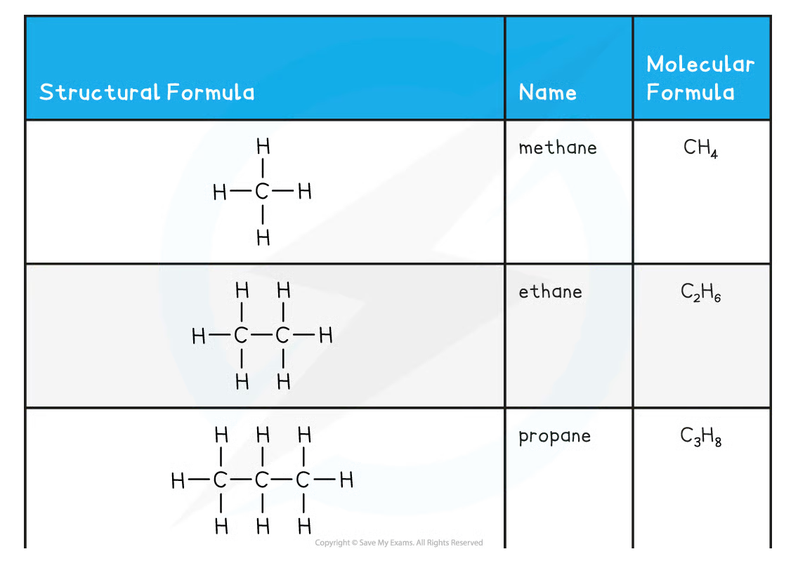
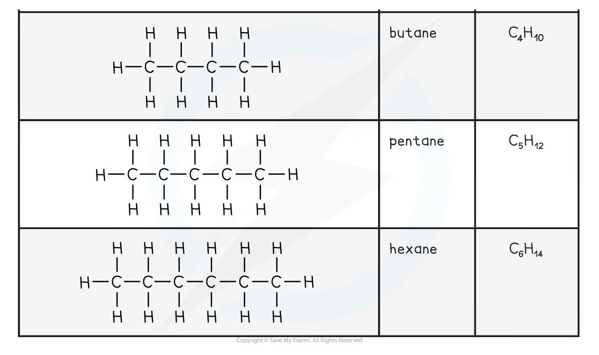
Structural variety
Alkanes can be straight-chain or branched。Cyclic alkanes contain a ring and have the general formula CₙH₂ₙ，so they are not acyclic alkanes even though they contain only single bonds。
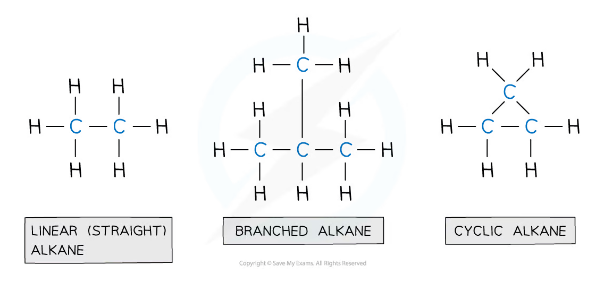
Bonding and polarity
C-C and C-H bonds are nearly non-polar because carbon and hydrogen have similar electronegativities。Any small bond dipoles cancel in a symmetrical alkane，so alkanes are overall non-polar。
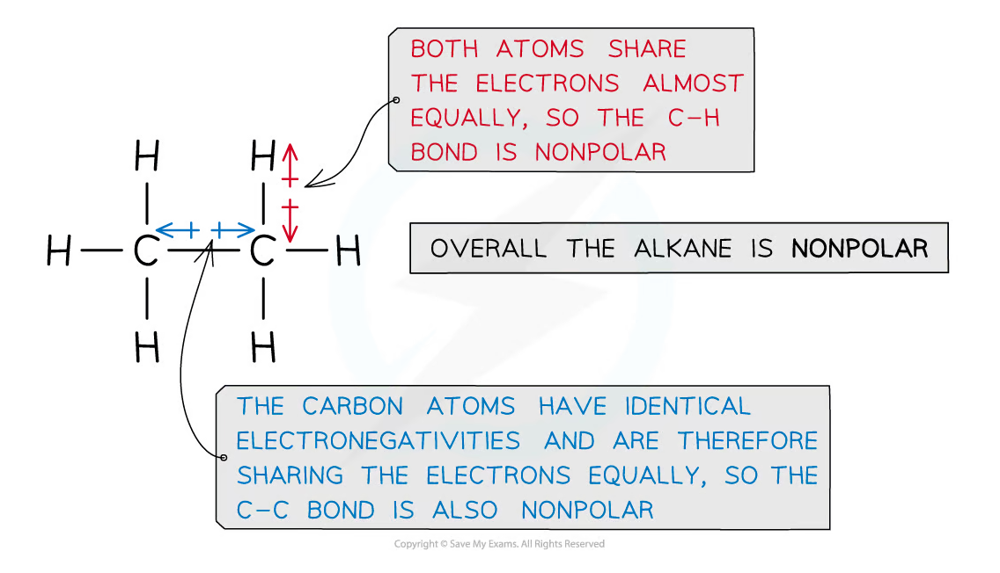
Alkanes are insoluble in water because non-polar molecules do not form sufficiently strong attractions with polar water molecules。They are soluble in non-polar organic solvents。
Physical properties
As the carbon chain becomes longer：
- molar mass and number of electrons increase；
- London dispersion forces become stronger；
- boiling point generally increases；
- viscosity generally increases；
- volatility and flammability generally decrease。
Branched isomers usually have lower boiling points than straight-chain isomers with the same molecular formula because branching reduces surface contact between molecules。
1.9.2 Alkanes as fuels
Crude oil
Crude oil is a mixture of hydrocarbons，mainly alkanes，with different chain lengths。It is a finite fossil resource and must be separated into useful fractions before use。
Fractional distillation
Fractional distillation separates crude oil because different hydrocarbons have different boiling points：
- crude oil is heated and vaporised；
- vapours enter a fractionating column，which is hot at the bottom and cooler at the top；
- each hydrocarbon condenses when it reaches a level below its boiling point；
- fractions are collected from different levels。
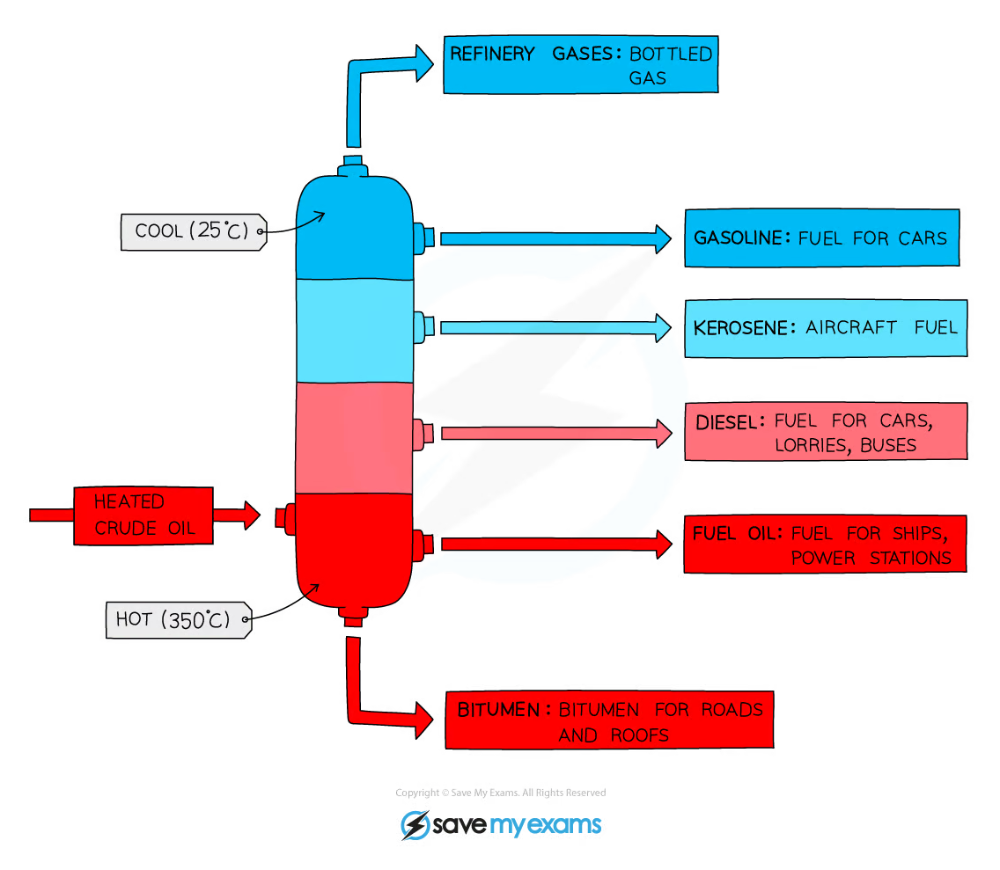
Fractions and uses
| Fraction | Approximate use |
|---|---|
| Refinery gases | Bottled gas and heating |
| Gasoline / petrol | Fuel for cars |
| Kerosene | Aircraft fuel |
| Diesel oil | Cars、lorries and buses |
| Fuel oil | Ships and power stations |
| Bitumen | Roads and roofing |
Longer-chain fractions have higher boiling points and are less volatile。Shorter-chain fractions are more useful as fuels for transport but are present in lower amounts than market demand。
Cracking
Cracking breaks long-chain alkanes into shorter-chain alkanes and alkenes。It uses heat and often a catalyst：
\[ \ce{C10H22 ->[heat][Al2O3] C8H18 + C2H4} \]
The products are more useful because：
- shorter alkanes are suitable transport fuels；
- alkenes are valuable feedstock for polymers and other chemicals；
- cracking helps match the supply of fractions with consumer demand。
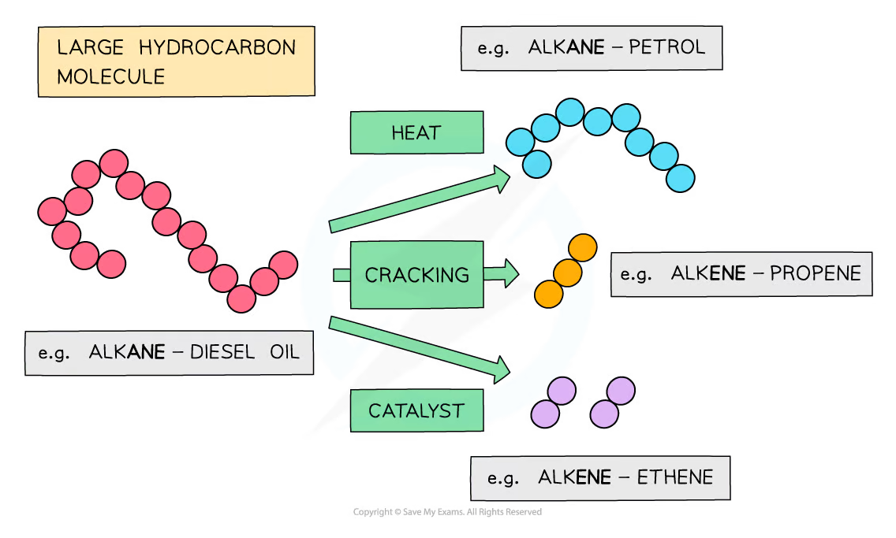
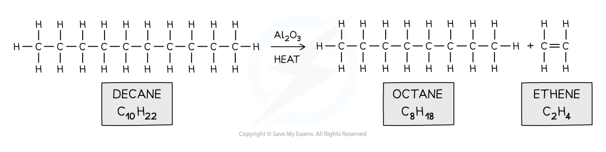
Cracking may be thermal cracking，which uses high temperature and pressure，or catalytic cracking，which uses a catalyst at a lower temperature and pressure。
1.9.3 Combustion of alkanes
Complete combustion
With excess oxygen，an alkane undergoes complete combustion to form carbon dioxide and water：
\[ \ce{C_nH_{2n+2} + \frac{3n+1}{2}O2 -> nCO2 + (n+1)H2O} \]
For octane：
\[ \ce{2C8H18 + 25O2 -> 16CO2 + 18H2O} \]
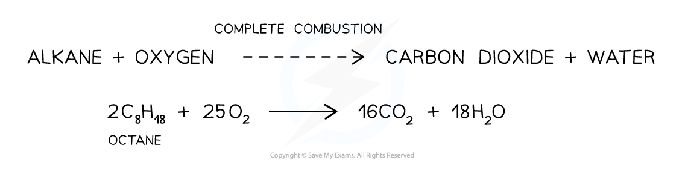
Complete combustion releases energy because strong bonds form in carbon dioxide and water。It is useful in engines and heating，but the carbon dioxide contributes to the enhanced greenhouse effect。
Incomplete combustion
With insufficient oxygen，incomplete combustion produces carbon monoxide and water：
\[ \ce{2C8H18 + 17O2 -> 16CO + 18H2O} \]
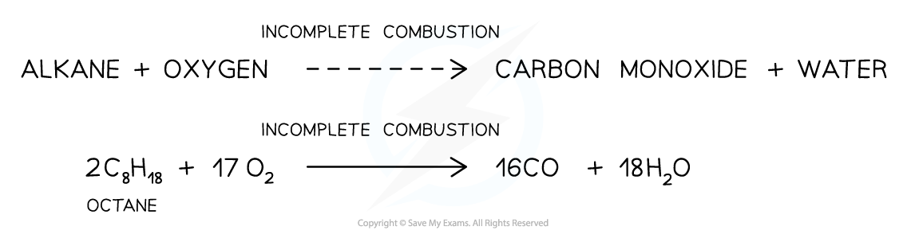
With even less oxygen，carbon / soot may form：
\[ \ce{2C8H18 + 9O2 -> 16C + 18H2O} \]
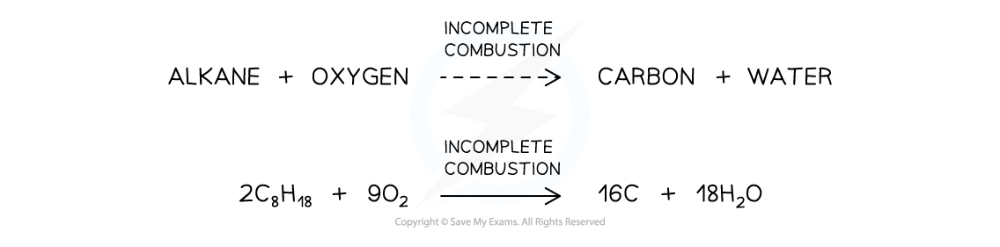
Carbon monoxide is dangerous because it binds strongly to haemoglobin and prevents the blood from carrying enough oxygen：
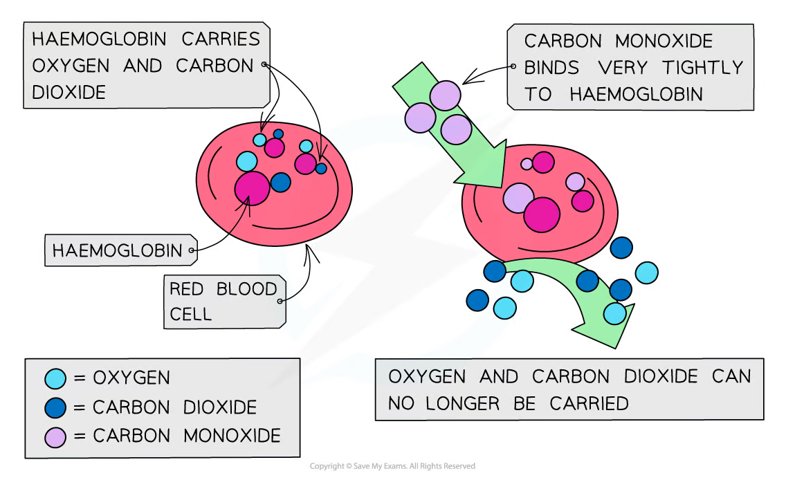
Particulates / soot can damage the respiratory system and contribute to respiratory disease。
Other pollutants
| Pollutant | Formation | Environmental or health effect |
|---|---|---|
CO |
Incomplete combustion | Toxic；binds to haemoglobin |
| Carbon particulates | Very incomplete combustion | Respiratory damage and reduced air quality |
CO₂ |
Complete combustion | Enhanced greenhouse effect |
SO₂ |
Sulfur impurities in fuel burn | Acid rain and respiratory irritation |
NOₓ |
Nitrogen and oxygen react at high engine temperature | Acid rain and photochemical pollution |
| Unburnt hydrocarbons | Incomplete combustion | Photochemical smog |
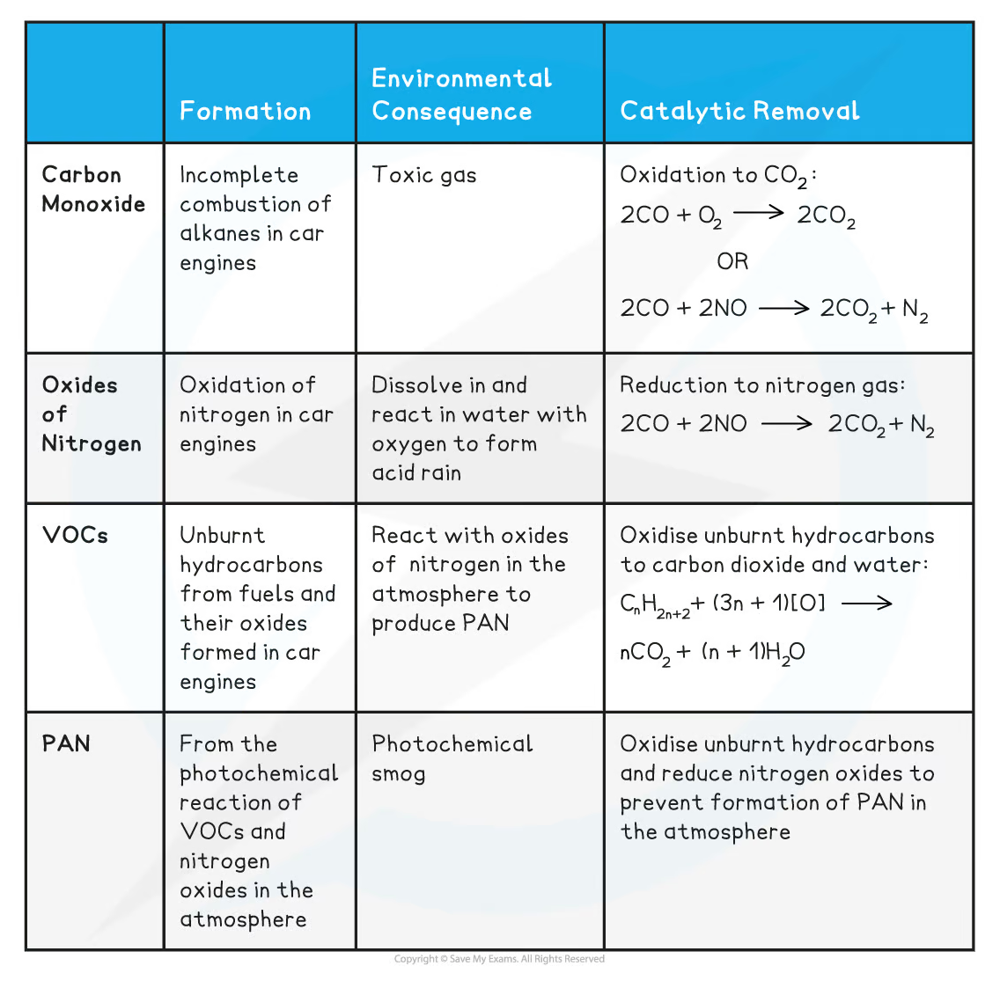
Catalytic converters
In a petrol-engine exhaust，a catalytic converter promotes redox reactions that remove carbon monoxide、unburnt hydrocarbons and nitrogen oxides。For example：
\[ \ce{2CO + 2NO -> 2CO2 + N2} \]
The catalyst surface helps convert harmful gases into less harmful products，but the converter does not remove carbon dioxide from the exhaust。
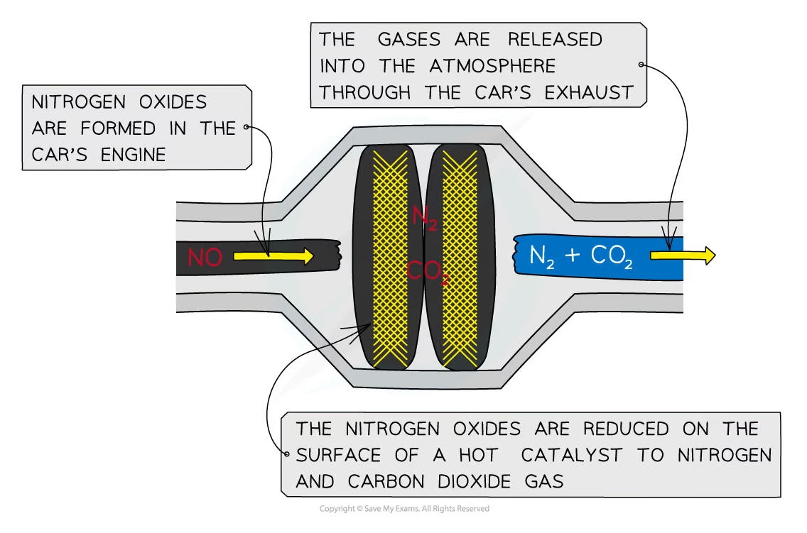
1.9.4 Alternative fuels
Hydrogen
Hydrogen can release energy when combusted：
\[ \ce{2H2 + O2 -> 2H2O} \]
Its direct product is water，so there is no carbon dioxide at the point of use。However，the overall environmental benefit depends on how hydrogen is produced，stored and transported。Hydrogen is not a primary energy source if it is made using energy from another source。
Biofuels
Biofuels include bioethanol、biodiesel and biogas。They are made from recently grown biomass and may reduce dependence on finite crude-oil reserves。
Plants remove carbon dioxide from the atmosphere during photosynthesis：
\[ \ce{6CO2 + 6H2O ->[light] C6H12O6 + 6O2} \]
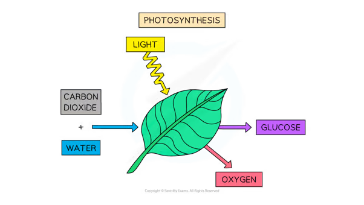
Biofuels are not automatically carbon-neutral。The full life-cycle assessment must include fertiliser、land use、farming、processing、transport and combustion。Using land for fuel crops may compete with food production and reduce biodiversity。
1.9.5 Free radicals and fission
Homolytic and heterolytic fission
Homolytic fission breaks a covalent bond so that each atom takes one electron from the shared pair：
\[ \ce{X-Y -> X. + .Y} \]
The products are free radicals，particles with an unpaired electron。The dot represents the unpaired electron。
Heterolytic fission breaks a covalent bond so that one atom takes both electrons：
\[ \ce{X-Y -> X+ + :Y-} \]
The products are ions rather than free radicals。
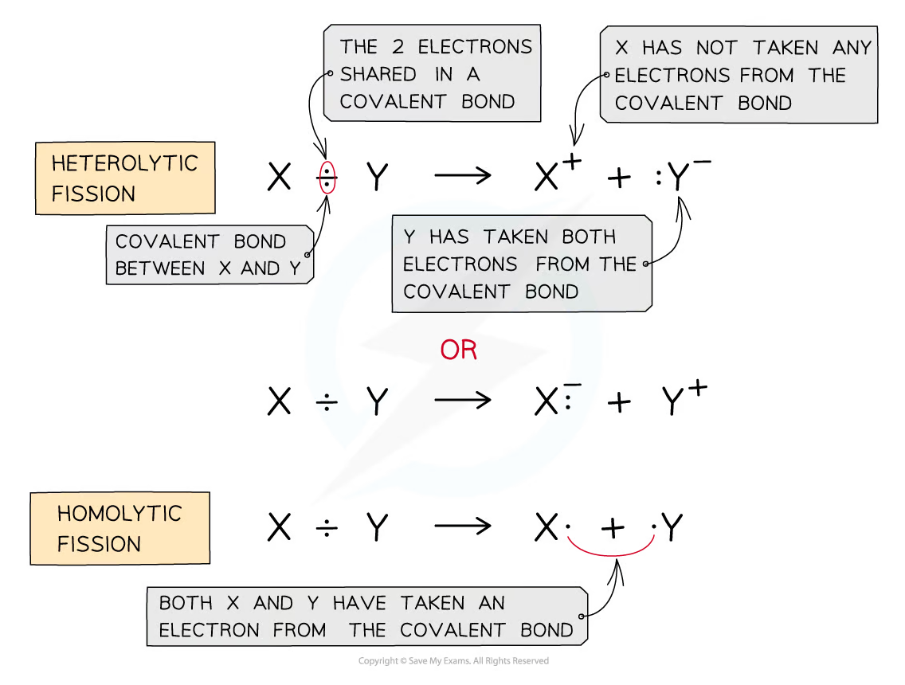
Ultraviolet light can provide the energy for homolytic fission of a halogen molecule：
\[ \ce{Cl2 ->[UV] 2Cl.} \]
1.9.6 Free-radical substitution mechanism
Alkanes react with chlorine or bromine under ultraviolet light in a free-radical substitution reaction。The mechanism has three stages。
Initiation
The halogen-halogen bond undergoes homolytic fission：
\[ \ce{Cl2 ->[UV] 2Cl.} \]
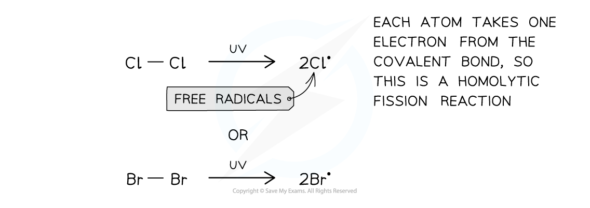
Propagation
The radical reacts with an alkane，forming hydrogen halide and an alkyl radical：
\[ \ce{Cl. + CH4 -> HCl + CH3.} \]
The alkyl radical then reacts with another halogen molecule，regenerating a halogen radical：
\[ \ce{CH3. + Cl2 -> CH3Cl + Cl.} \]
Because a radical is regenerated，the cycle can repeat many times。
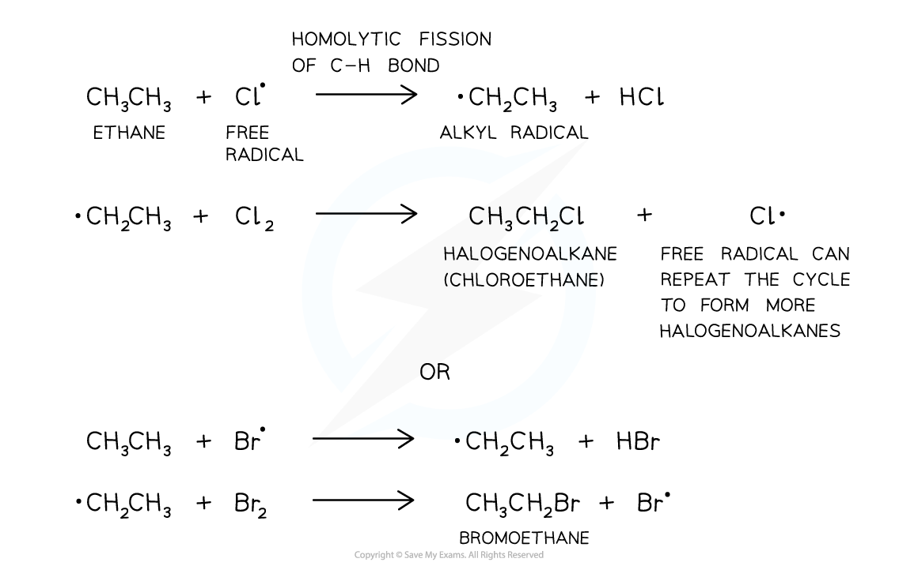
Termination
Two radicals combine to form a stable molecule and remove radicals from the reaction mixture：
\[ \ce{Cl. + Cl. -> Cl2} \]
\[ \ce{CH3. + Cl. -> CH3Cl} \]
\[ \ce{CH3. + CH3. -> C2H6} \]
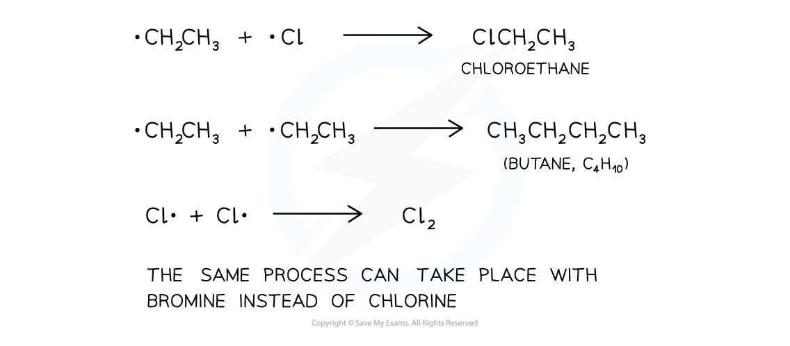
Limitations of the mechanism
Free-radical substitution is not ideal for preparing one pure product：
- several hydrogen atoms in a larger alkane can be substituted；
- further substitution can form dichloro、trichloro and tetrachloro products；
- different radicals can combine to form a mixture of longer-chain products；
- the reaction is difficult to control because radicals are highly reactive。
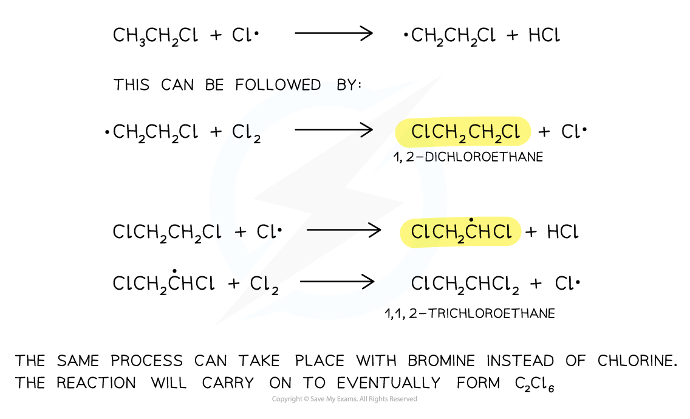
Using an excess of the alkane can reduce further substitution，but separation of products may still be required。
Exam checklist
Source note
本页面对应：Note per Chapter/Note per Chapter/1.9 Alkanes.pdf.pdf。页面中的 alkane formulae、fractional-distillation、cracking、combustion、pollution、alternative-fuel、fission 和 free-radical-mechanism figures 均从该 PDF 的 embedded images 独立提取，并转换为 RGB white-background PNG 后保存到 assets/notes/alkanes/。